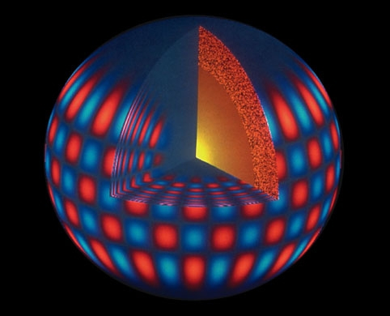
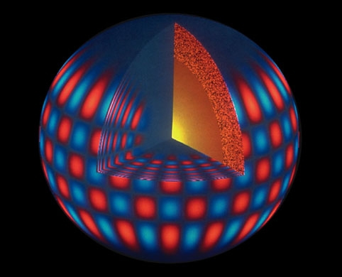

Welcome to the homepage of SPEX research group
SPEX is a research group of astronomers at the Konkoly Observatory, who use the high-precision space photometric data of Kepler, a NASA space telescope in order to study stellar interiors through oscillations and planetary systems. The group was founded in 2007, two years before the launch of the telescope.


Kepler is a NASA Discovery mission which aims at finding Earth-size planets around Sun-like stars in the habitable zone. To do this, Kepler monitors around 150,000 stars continuously close to the plane of our Galaxy, in the constellations Cygnus and Lyra. The planets are discovered by measuring the brightness of the stars hunting for transits, the tiny dimmings caused by the occultation by their planets. As of February, 2015 more than a thousand confirmed planets have been found, among them the first multiple transiting system Kepler-9b and -9c, two Saturn-sized exoplanets orbiting the same star; Kepler-10b, the smallest known rocky planet, Kepler-11b-g, a solar-like star hosting six exoplantes, planets around binary stars, etc. In addition, over 4100 planetary candidates have been announced, many of them Earth-sized or smaller, and some orbiting in the habitable zone.
 

Kepler allows the most precise stellar brightness measurements ever taken. The continuous observations provide a unique way to study stellar variability due to spots, flares, eclipses and pulsations or oscillations. Asteroseismology uses stellar oscillations detected in the form of light variations to map stellar interiors, just like seismologists use earthquakes to get information about the structure of planet Earth. Stellar seismology provides means to derive accurate stellar parameters, like mass, radius and age. Parameters of the detected transiting planets can be derived relative to their host stars. Therefore seismology helps to characterize planets and planetary systems, as well. Studying any type of pulsating stars benefits from the uninterrupted and precise measurements. Unexpected astrophysical phenomena and important contributions to long-standing problems are anticipated at this level in the case of practically all types of stars.


The Kepler Asteroseismic Science Consortium (KASC) was formed to organize and maintain asteroseismology and pulsating variable star research with Kepler. This consortium now has more than 400 members worldwide working in 13 different working groups. R. Szabó was appointed as chair of Working Group#7 (Cepheids) and chair of the Stellar modelling subgroup of WG#13 (RR Lyrae), while L. L. Kiss became the leader of Working Group#12 (Mira and semiregular stars). The Hungarian Kepler Group (KIK) members participated in the target selection process before the launch of Kepler. This was a crucial work, since Kepler can observe only preselected targets. As working group leaders, we periodically update the Kepler astroseismic target list, thereby actively influence the operation of the spacecraft and the mission. Finally a short list of other Kepler-related activities that KIK conducts:
- preparatory work, target selection
- ground-based follow-up observations
- data processing, data analysis
- stellar modeling
- interpretation and publication of the results
- writing successful Guest Observer and DDT proposals
- KASC organization, administration, policy decisions
- public outreach